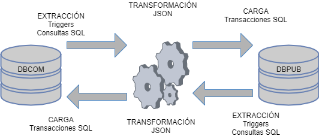

TÉCNICAS DE CONSTRUCCIÓN DE SERVICIOS WEB
Actividad 5: Proyecto Integrador Etapa 1
Alumno: Roberto Horacio Pérez López
Cuenta: 020161930
Profesor: Manuel Triana Vega
Fecha: 27 de marzo de 2022
INTRODUCCIÓN
El presente proyecto integrador busca aplicar todos los conocimientos adquiridos a lo largo del curso en un caso de aplicación dentro de mi área laboral, tomando como referencia actividades desarrolladas anteriormente.
En la primera etapa del proyecto integrador analizaremos una problemática en mi lugar de trabajo con potencial para ser abordada mediante un servicio Web, y a partir de esta problemática generaremos una propuesta de proyecto de servicio web, describiendo la metodología a utilizar y justificando la arquitectura elegida.
En la segunda etapa generaremos el diseño de la arquitectura del servicio web a desarrollar, definiendo los elementos y las pruebas necesarias para asegurar su funcionamiento. Finalmente, en la tercera etapa realizaremos el desarrollo del servicio Web basado en alguna de las arquitecturas SOAP o REST.
PRIMERA ETAPA: PROPUESTA DE PROYECTO DE SERVICIO WEB
Breve descripción de la organización
Actualmente me desempeño como desarrollador en la subdirección de informática para un Centro Público de Investigación (CPI), adscrito al Consejo Nacional de Ciencia y Tecnología (CONACyT). En este CPI se desarrollan investigaciones en Ciencias Sociales y Humanidades, cuenta con programas académicos de licenciatura y posgrados, servicio de biblioteca de acceso público, programas de becas y servicios de edición, publicación y comercialización de libros y revistas de ciencias sociales. El principal sector al que atiende este CPI es el sector académico, aunque está abierto al público en general.
Impacto de los servicios Web en esta organización
El uso de servicios Web ha sido esencial dentro de este CPI. Un caso representativo es el de la biblioteca, cuyo acceso a artículos científicos en otras plataformas se realiza mediante servicios Web. De igual manera, algunos servicios que tienen que ver con trámites con el CONACyT o con el gobierno, con el timbrado de recibos de nómina de los trabajadores o con el trabajo desde casa también emplean servicios Web.
Descripción del problema a atender
Como mencionaba en la actividad anterior, en este CPI existe la dirección de publicaciones y la dirección de comercialización. Publicaciones se encarga de imprimir tirajes de libros y revistas, almacenarlos y distribuirlos, contando con un sistema informático en donde se lleva el control del inventario de libros disponibles, entradas, salidas, títulos nuevos, descontinuados, en mal estado, etc. Por su parte, Comercialización se encarga de la venta de libros y revistas a través de distintos canales de ventas (tiendas físicas, librería en línea, ferias de libros, etc.). Para ello, la dirección de comercialización cuenta con su propio sistema basado en Web, desde el cuál se gestionan las órdenes de compra.
Evidentemente, ambas direcciones deben compartir información: las órdenes generadas en el sistema de comercialización se convierten en solicitudes de salida de libros en el sistema de publicaciones, mientras que cambios en los inventarios desde el sistema de publicaciones (nuevos títulos, existencias disponibles, etc.) deben reflejarse en el sistema de comercialización. Actualmente esta comunicación se realiza de manera manual, lo cual ha causado problemas para ambas direcciones. Por ejemplo, órdenes de compra generadas en el sistema de comercialización que no pueden ser completadas porque alguno de los títulos ya no cuenta con existencias en el sistema de publicaciones.
Es por ello por lo que resulta necesario desarrollar un servicio Web que permita comunicar de manera automática ambos sistemas, de modo que todos los cambios en uno de los sistemas se vean reflejados inmediatamente en el otro.
Descripción de la metodología para desarrollar el servicio Web
La metodología por seguir para el desarrollo del servicio Web será la siguiente:
Justificación de la arquitectura elegida.
Considero que el servicio a desarrollar no requiere de una estructura de datos muy sofisticada, pues la información compartida no requiere de mayor seguridad que la ofrecida por la misma red interna en la que operará (no se plantea compartir información sensible, como números bancarios ni contraseñas), de modo que resulta más simple utilizar un servicio REST, que es más ligero.
SEGUNDA ETAPA: DISEÑO DE LA ARQUITECTURA DEL SERVICIO WEB
Definición de fuentes de datos a utilizar
Las fuentes de datos para este servicio se encuentran en la base de datos del sistema de Comercialización (que llamaremos BDCOM) y la base de datos del sistema de Publicaciones (que llamaremos BDPUB).
De estas dos bases de datos, la información que nos interesa se encuentra en las tablas listadas a continuación:
|
Sistema de Comercialización (BDCOM) |
|
|
Tabla |
Descripción |
|
Cliente |
Contiene la información básica del cliente (nombre, rfc, email, teléfono) |
|
Artículo |
Contiene información de los títulos del catálogo (sku, titulo, autor, ISBN/ISSN, peso, dimensiones, editorial) |
|
Direccion_facturacion |
Contiene la dirección de facturación del cliente (calle, número exterior e interior, colonia, ciudad, estado, referencias) |
|
Direccion_envio |
Contiene la dirección de envío del cliente (calle, número exterior e interior, colonia, ciudad, estado, referencias) |
|
Orden_compra |
Contiene el encabezado de una orden de compra (fecha, cantidad de títulos, subtotal, total, estatus) |
|
Detalle_orden |
Contiene el detalle de una orden de compra (sku del artículo, cantidad, precio unitario) |
|
Comprobante_compra |
Contiene la información del comprobante de compra (número de referencia, importe, autorizacion) |
|
Sistema de Publicaciones (BDPUB) |
|
|
Tabla |
Descripción |
|
Artículo |
Contiene información de los títulos de publicaciones (sku, titulo, autor, ISBN/ISSN, peso, dimensiones, editorial) |
|
Inventario |
Contiene la información de existencias de los títulos en el almacén (sku, estante, existencias, defectuosos) |
|
Movimiento |
Contiene el registro de los movimientos de entradas y salidas del almacén (cantidad total, tipo de movimiento, fecha del movimiento, autorización) |
|
Detalle_movimiento |
Contiene la información del detalle de movimiento (sku, cantidad) |
|
Solicitud |
Contiene la información de una solicitud de orden de compra (id de la orden de compra, cantidad total, fecha) |
|
Detalle_solicitud |
Contiene la información del detalle de una solicitud (sku, cantidad) |
Procesos de extracción, transformación y carga de datos
El proceso de extracción, transformación y carga de datos para este desarrollo se manejará de manera bidireccional entre ambos sistemas.

Mecanismos e infraestructura para el almacenamiento y gestión de datos
Los mecanismos e infraestructura para el almacenamiento de datos ya están dados por los sistemas actuales. Ambas bases de datos están montadas en ORACLE y manejadas desde ORACLE SQL Developer.
Interfaz de usuario a utilizar
Las interfaces de usuario a utilizar están determinadas por los sistemas actuales: el sistema de comercialización emplea un sitio web de compras en línea, y otro sitio web interno para los usuarios del área de comercialización.; en el caso de publicaciones existe un sitio web interno para el manejo de los usuarios del almacén.
Mecanismos de seguridad
Dado que se manejan algunos datos sensibles, como direcciones domiciliarias y datos personales de clientes, resulta necesario agregar una capa de seguridad. Esta capa de seguridad recaerá en crear conexiones seguras de comunicación entre ambos sistemas. Ambos sistemas están montados en servidores Apache, de modo que emplearemos la librería OpenSSL para encriptar las comunicaciones.
REFERENCIAS